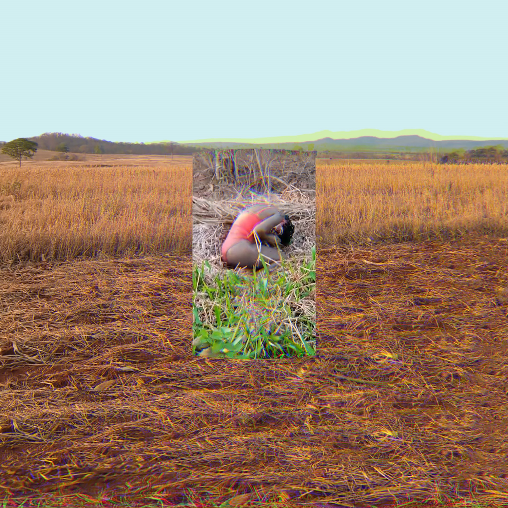

Pedido para Nanã
Pedido para Nanã é um trabalho criado por Tatiana Reis, moradora do Quilombo Lagoinha de Baixo, comunidade negra rural em Chapada dos Guimarães - MT. O vídeo passa a mensagem de um povo que luta pela liberdade de expressão, contando com a benção e ajuda de seus ancestrais. Em referência à Nanã, pedimos prece pelas nossas terras, por nossas nascentes, pela nossa água. Caminho por uma estrada sem obstáculos, pé no chão, sensação de liberdade. Então lembro que para usufruir dela preciso ser livre. A liberdade são correntes que aprisionam minhas ações, minhas palavras, minhas ideias, me fazendo escrava de mim mesma. Seguindo por caminhos distintos, me deparo com o que mais preciso no momento. Encontrando uma mata fechada, ar fresco, terra úmida, me sinto protegida na esperança de que do outro lado encontrarei o que tanto almejo. Ao me libertar das correntes, corro ao encontro do futuro, mas não tem nada lá. A terra é seca, as plantações sugam o solo, as represas se secam. Mato minha sede com água barrosa, faço minha dança para Nanã, mãe de todas as mães, rainha das águas paradas. E sou atendida, peço a todos os orixás para que me dêem forças para lutar e algo para me agarrar. Viemos do barro contemplados pelo sopro da vida. Somos espíritos guerreiros e assim seguimos nossas lutas.
